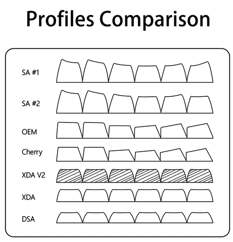
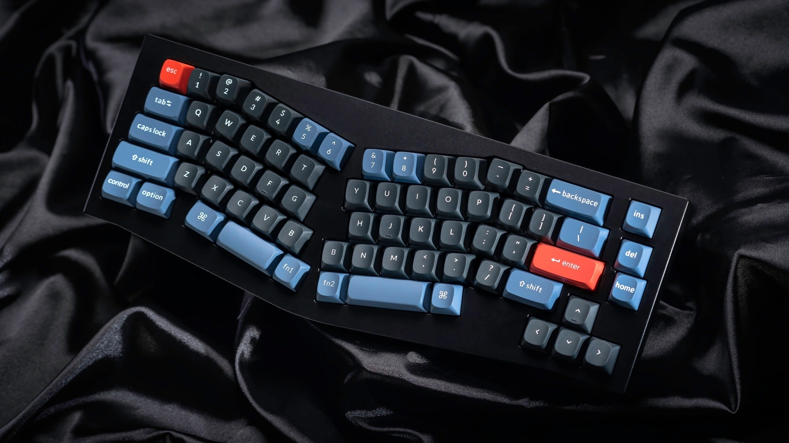
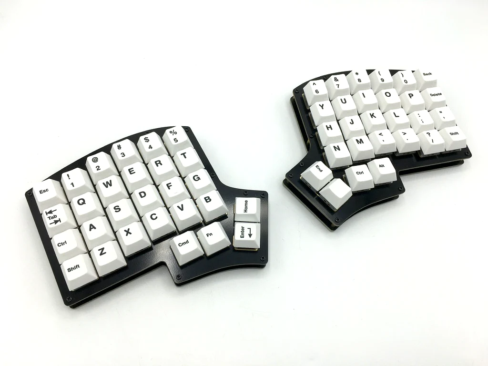
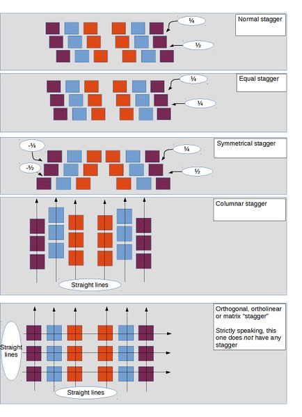
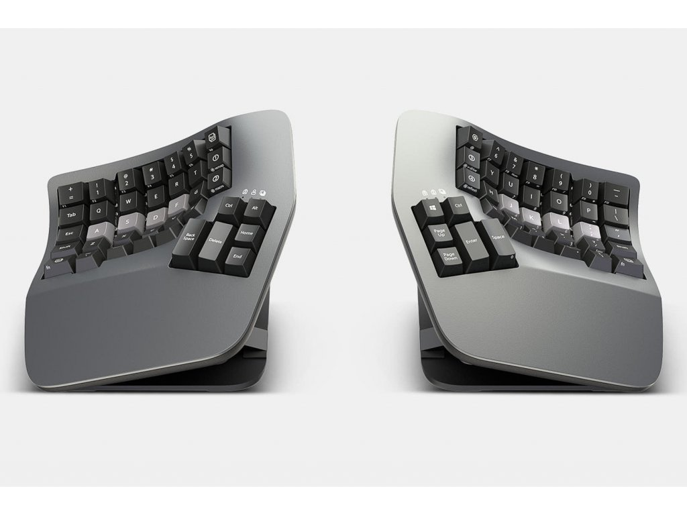

<!DOCTYPE html>
<html lang="en">
  <head>
    <meta charset="utf-8" />
    <meta name="viewport" content="width=device-width, initial-scale=1.0, maximum-scale=1.0, user-scalable=no" />

    <title>reveal-md</title>
    <link rel="shortcut icon" href="./favicon.ico" />
    <link rel="stylesheet" href="./dist/reset.css" />
    <link rel="stylesheet" href="./dist/reveal.css" />
    <link rel="stylesheet" href="./dist/theme/moon.css" id="theme" />
    <link rel="stylesheet" href="./css/highlight/base16/zenburn.css" />

    <link rel="stylesheet" href="./assets/styles.css" />

  </head>
  <body>
    <div class="reveal">
      <div class="slides"><section  data-markdown><script type="text/template"># Keyboards 101

From mechanicals to custom, and ergonomic ones
Daniel Lazar - One Identity


</script></section><section ><section data-markdown><script type="text/template">
## What are mechanical keyboards?


</script></section><section data-markdown><script type="text/template">
### Compared to membrane keyboards


</script></section><section data-markdown><script type="text/template">
### Basic switch types


</script></section><section data-markdown><script type="text/template">
### The switch's colors

Different colors, represent:

- Different mechanisms
- Typing experiences
- Required weight to press

(These specs also depend on the switch's brand)
</script></section><section data-markdown><script type="text/template">
### E.g. Cherry MX switches specs


</script></section></section><section ><section data-markdown><script type="text/template">
## Works differently... But why get one?


</script></section><section data-markdown><script type="text/template">
### Why?


- More convenient
- Sounds heavenly
- Can give more feedback
- Overall better typing experience
</script></section></section><section ><section data-markdown><script type="text/template">
## How to have a good keyboard?


</script></section><section data-markdown><script type="text/template">
### Most important: Switches

- Choose the most convenient for you (linear, tactile, clicky)
- Have the right pressing weight
  - Heavier ones may be too much for you at first
- Is it pre-lubed?
</script></section><section data-markdown><script type="text/template">
### Wait you said lubed?

Yep

- Less spring noise
- Smoother presses

<!-- <aside class="notes"><p>You can do it yourself if you have unlubed switches (or you want to relube it), or buy pre-lubed ones that saves you lots of trouble. --&gt;</p>
<!-- TODO: Get some more usefull images --></aside></script></section><section data-markdown><script type="text/template">
### And it's not just the switches

There are lots of factors, e.g.:

- Material of keycaps (e.g. PBT)
- Material of case
- Material of plate
- Gasket
- Foaming
</script></section><section data-markdown><script type="text/template">

</script></section><section data-markdown><script type="text/template">

</script></section></section><section ><section data-markdown><script type="text/template">
## Increase the comfort of typing


</script></section><section data-markdown><script type="text/template">
### Keycap profiles


</script></section><section data-markdown><script type="text/template">
### Split keyboards

E.g. Alice style


</script></section><section data-markdown><script type="text/template">
### Fully split keyboards


</script></section><section data-markdown><script type="text/template">
### Staggers


</script></section><section data-markdown><script type="text/template">
### AND THERE IS EVEN MORE!
</script></section><section data-markdown><script type="text/template">
### Staggering in 3D

E.g. Kinesis keyboards


</script></section><section data-markdown><script type="text/template">
### But they're so weird... Why?

We rarely ever use our thumbs on regular keyboard


</script></section><section data-markdown><script type="text/template">
These keyboards:

- Fix this problem
- Prevent shoulder pain
- Less moving hands and use of our pinky
- Give more opportunities for layers
</script></section><section data-markdown><script type="text/template">
### AND


</script></section></section><section ><section data-markdown><script type="text/template">
## Other layouts and custom layers
</script></section><section data-markdown><script type="text/template">
### Layouts

- QUERTY
- QUERTZ
- COLEMAK
- DVORAK


</script></section><section data-markdown><script type="text/template">
### What are layers?

We use it everyday! E.g.:

- Standard layer
- Shift layer

There are more types of layers

- Hold (Shift)
- Toggle (Caps Lock)
- Hold duration (Mac special characters)

But we can make custom ones!
</script></section><section data-markdown><script type="text/template">
### Programable keyboards
</script></section><section data-markdown><script type="text/template">

</script></section><section data-markdown><script type="text/template">

</script></section><section data-markdown><script type="text/template">

</script></section><section data-markdown><script type="text/template">
### Software based layout changes


</script></section><section data-markdown><script type="text/template">
### My VIA demo


</script></section></section><section ><section data-markdown><script type="text/template">
## Thank you!


</script></section><section data-markdown><script type="text/template">
### Summary

- What are mechanical keyboards?
- Works differently... But why get one?
- How to have a good keyboard?
- Increase the comfort of typing
- Custom layouts and layers

<u>Questions?</u>
</script></section></section></div>
    </div>

    <script src="./dist/reveal.js"></script>

    <script src="./plugin/markdown/markdown.js"></script>
    <script src="./plugin/highlight/highlight.js"></script>
    <script src="./plugin/zoom/zoom.js"></script>
    <script src="./plugin/notes/notes.js"></script>
    <script src="./plugin/math/math.js"></script>
    <script>
      function extend() {
        var target = {};
        for (var i = 0; i < arguments.length; i++) {
          var source = arguments[i];
          for (var key in source) {
            if (source.hasOwnProperty(key)) {
              target[key] = source[key];
            }
          }
        }
        return target;
      }

      // default options to init reveal.js
      var defaultOptions = {
        controls: true,
        progress: true,
        history: true,
        center: true,
        transition: 'default', // none/fade/slide/convex/concave/zoom
        slideNumber: true,
        plugins: [
          RevealMarkdown,
          RevealHighlight,
          RevealZoom,
          RevealNotes,
          RevealMath
        ]
      };

      // options from URL query string
      var queryOptions = Reveal().getQueryHash() || {};

      var options = extend(defaultOptions, {"controls":true,"progress":true,"history":true,"center":true,"slideNumber":true}, queryOptions);
    </script>


    <script>
      Reveal.initialize(options);
    </script>
  </body>
</html>
